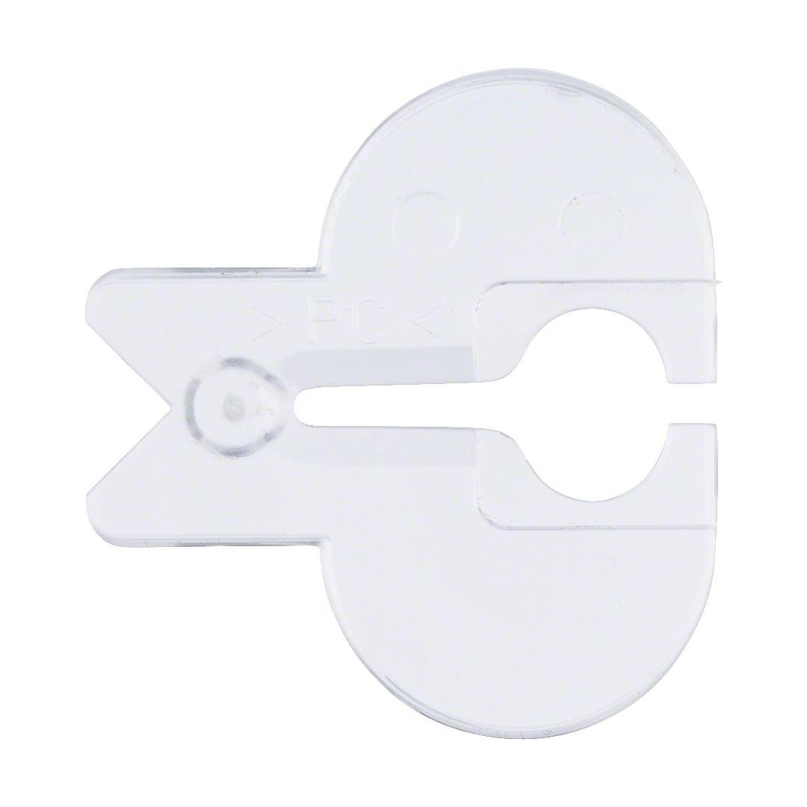
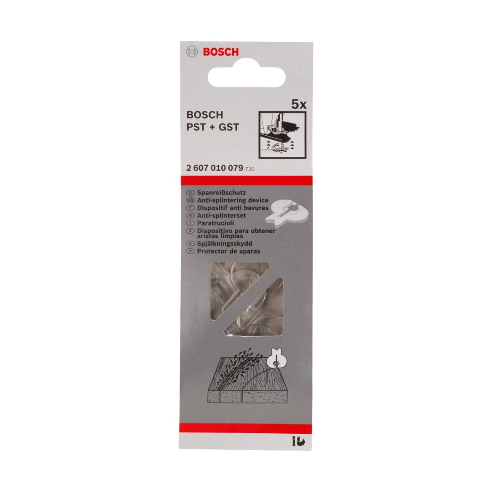

2607010079


| Suitable for |
GST 14.4 V; GST 18.0 V; GST 75 BE; GST 80 Professional; AdvancedSaw 18V-140; EasySaw 18V-70; PST 650; PST 650 L; PST 680 E; PST 680 EL; PST 700 E; PST 700 PE; PST 800 PEL; PST 900 PEL; PST 1000 CE; PST 1000 PEL; UniversalSaw 18V-100 |
| Packaging type |
Paper / Cardboard / Corrugated board - Packaging, carton, with Euro hole |
| Pack quantity |
5 Pcs |
| Minimum order quantity |
5 Pcs |